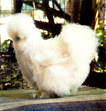

We have raised show rabbits for seven years and have had wonderful experiences with my daughters showing them. 'The major downside, as with all livestock, is manure management and flies. Parasitic flies reduce the nasty fly population, but have to be bought every year and are expensive. We've tried chickens, but even Bantics with clipped wings would flap their way up and roost on the cages. Usually they roost right over the water bottle or dish ... and yuck! This year we took a double path to a fly-free, cleaner environment. We put stall mats under the rows of cages (25 to 30 cages) so raking and shoveling were easier, and we had a cleaner floor when we were done with that once-a-month job.
We bought Silkie Bantam chickens who do a very poor job of flying because their feathers are hairy instead of stiff. They do hop and flap a lot and have made it to the top of a closed garbage can with the help of a cage left beside the can. But none have made it to the top of the cage.
I started with five chickens, which were too many, but a marauding raccoon took three, including the rooster. Two hens are just perfect for a 20x20 rabbit house. Once or twice a week they get out and see the world, and I frequently drop them some comfrey greens while feeding the rabbits.
Besides the reduction - probably 80 percent fewer flies compared to last year - my chickens make me happy.
DIANA MOORE CASON
Snohomish, Washington
|
 |
|
|